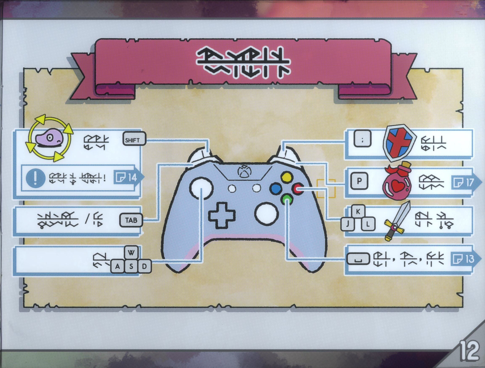

What is Tunic?
Tunic is an adventure game heavily inspired by the Legend of Zelda Series. Tunic's little sword and shield even resemble the ones Link has in links awakening. Don’t be fooled by its simple aesthetics, this game is not going to hold your hand. In fact, it wants you to figure out everything on your own. There are no fairies to tell you which way to go and even signs give you little info. But what about the UI?
Oh...
Retro is back in style
With the hidden puzzles and various enemies, the game keeps players entertained for hours. Tunic’s weaponry consists of sword and shield, bombs, the magic orb, a magic dagger, the magic wand and of course the magic gun; unlocking them as you progress through the game. Each weapon uncovers a secret to the plot of the game. Make sure you stop and pray at the fox statues! They are respawn points and recover health and mana; however they recover health for the defeated monsters as well.